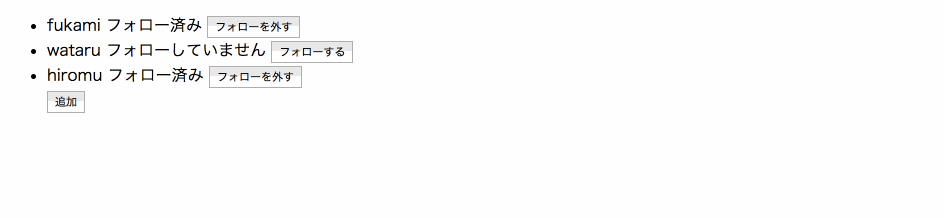

knockoutでobservableな配列を作ってみる③
他にもknockoutjsの機能はたくさんあります。
公式ドキュメント
を見ながら作ってみましょう
ユーザー一覧画面
ユーザーの名前、フォローしている/していない、ボタンを表示
ボタンを押すと2秒間loadingを表示し、その後フォローを外したり付けたりする
追加ボタンを押すと追加することが出来、追加したものに対しても同様に上記の動作ができる
